What's your name, racer?
Scuttle your crab from the shoreline all the way to the checkered finish line. Reach it as fast as you can — the clock is running. In a multiplayer room the race keeps going after the first finish: once one crab crosses, everyone else gets a few seconds to reach the line before the race ends — stragglers are recorded as DNF. Every multiplayer race can be shared and re-watched as a replay.
Lanes run the length of the beach — dodge trouble by switching lanes. There's always a clear path to the finish.